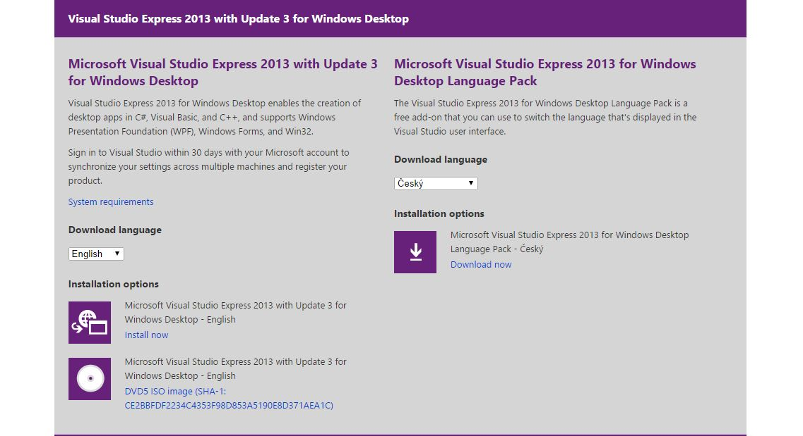
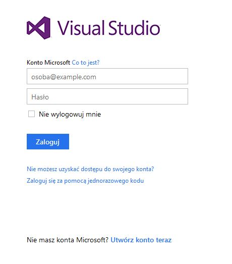
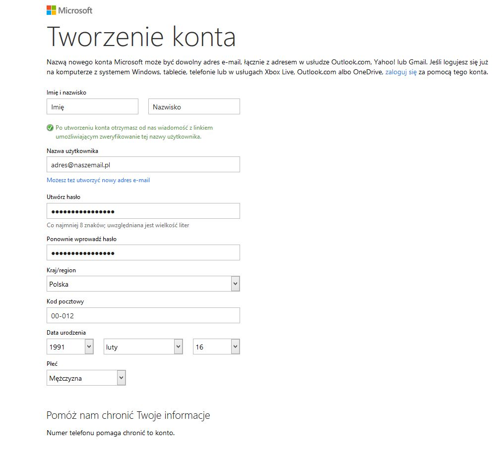
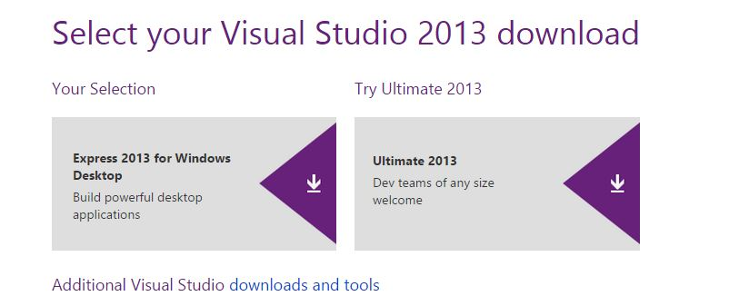
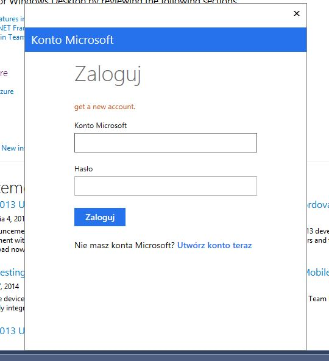
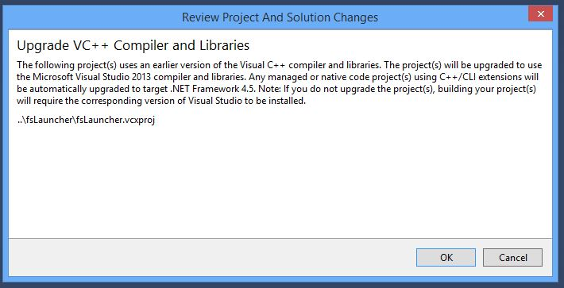
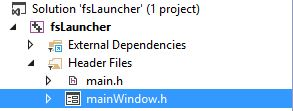

Projekt jest przygotowany pod Visual Studio 2013, więc musimy go pobrać. Visual Studio 2013 nie działa pod systemem Windows XP. Pobieramy wersję Desktop ponieważ tworzymy aplikację desktopową, a nie ModernUI.
Visual Studio 2013 możemy pobrać z oficjalnej strony Microsoftu - http://www.visualstudio.com/en-us/downloads

W celu pobrania Visual Studio musimy posiadać konto Microsoft. Jeżeli go nie posiadamy przechodzimy do punktu 2. Jeżeli je posiadamy przechodzimy do punktu 3.
W celu pobrania Visual Studio 2013 musimy stworzyć konto Microsoft. Na ekranie logowania klikamy Nie masz konta Microsoft? Utwórz konto teraz

Wypełniamy wszystkie pola i klkamy przycisk 'utwórz konto'

Odbieramy email od Microsoftu i klikamy w link aktywacyjny.
Ponownie przechodzimy do strony pobierania Visual Studio i logujemy się naszym nowo utworzonym kontem Microsoft.
Po zalogowaniu się kontem Microsoft ujrzymy ekran wyboru wersji zachęcający nas do wybróbowania wersji Ultimate. Wybieramy wersję Express.

W tej chwili przeglądarka zapyta nas o pobranie pliku. Pobieramy go i otwieramy.
W oknie instalatora postępujemy zgodnie z instrukcjami. Nie powinno być to trudne.
Po instalacji otwieramy Visual Studio 2013 i wybieramy z prawego górnego rogu opcję 'Sign In'

Po zalogowaniu ignorujemy pole do wypełnienia nazwy domeny i stworzenia konta Visual Studio Online i klikamy 'Kontynuuj'.
Teraz kiedy jesteśmy już zalogowani i Visual Studio jest aktywowane możemy otworzyć nasz projekt. Klikamy 'FILE' i 'Open Project'. Znajdujemy i otwieramy plik fsLauncher.sln
Ponieważ Visual Studio jest cały czas aktualizowane, może nam pojawić się komunikat o aktualizacji projektu. W takim wypadku zgadzamy się na to.

Ponieważ edycja form wymaga wygenerowania nowych plików które są usunięte aby zmniejszyć wielkość arhiwum najpierw musimy skompilować projekt. Wybieramy 'BUILD' i 'Build Solution'.
Po udanej kompilacji z menu z boku wybieramy 'Header files' i zaznaczamy 'mainWindow.h'. Czekamy aż Visual Studio załaduje dynamiczny projekt formy i możemy edytować wygląd formy.

Większość tekstu na formie mainWindow.h jest w postaci obrazków. Obrazki te znajdują się w folderze fsLauncher.
W celu edycji kodu klikamy PPM na białym obszarze edytora formy i wybieramy 'View Code'.
W celu edycji adresu serwera SA-MP znajdujemy kod gethostbyname("samp.fullserver.eu"); i podmieniamy go na swoją nazwę domeny lub wpisujemy nodomain.tld jeżeli nie mamy. Następnie znajdujemy runGame(nickName, "178.19.106.171", 7777, ""); i zamieniamy adres IP na swój.
W celu edycji adresu buttona Facebooka znajdujemy openBrowser("https://www.facebook.com/fullserver"); i zamieniamy adres URL na swój.
W celu edycji adresu forum znajdujemy openBrowser("http://fullserver.eu"); i zamieniamy adres URL na swój.
Za newsy odpowiada plik news.htm a za tło newsów plik news_feed_background.png. Oba pliki musisz skopiować na swój serwer WWW a potem znaleźć kod this->newsBrowser->Navigate("https://s3-eu-west-1.amazonaws.com/i32/fslauncher/news.htm"); i podmienić adres URL na swój.
Za aktualizację odpowiada plik checkin.xml. Musisz go skopiować na swój adres WWW a potem znaleźć kod XmlTextReader^ reader = gcnew XmlTextReader("https://s3-eu-west-1.amazonaws.com/i32/fslauncher/checkin.xml"); i podmienić adres URL na swój.
W pliku checkin.xml wpis updater oznacza wersję Launchera, która zapisana jest w pliku main.h. Za wersję SA-MP odpowiada wpis samp. W tym wpisie znajduje się suma MD5 pliku samp.dll. Aby launcher mógł prawidłowo sprawdzić wersję SA-MP musi być w tym samym katalogu co GTA San Andreas. W celu obliczenia ręcznie sumy MD5 pliku samp.dll można wykorzystać np. program WinMD5Free.
Po wykonaniu wszystkich zmian kompilujemy ponownie projekt używająć 'BUILD' i 'Build Solution'.
Projekt instalatora przygotowany jest pod NSIS. Pobieramy NSIS z linku http://nsis.sourceforge.net/Download
Po zainstalowaniu NSIS klikamy PPM na plik fsLauncher.nsi i wybieramy 'Compile Script'. Opcjonalnie możemy zedytować plik .nsi w celu edycji numeru wersji albo nazwy Launchera.
Trochę przydatnych informacji: